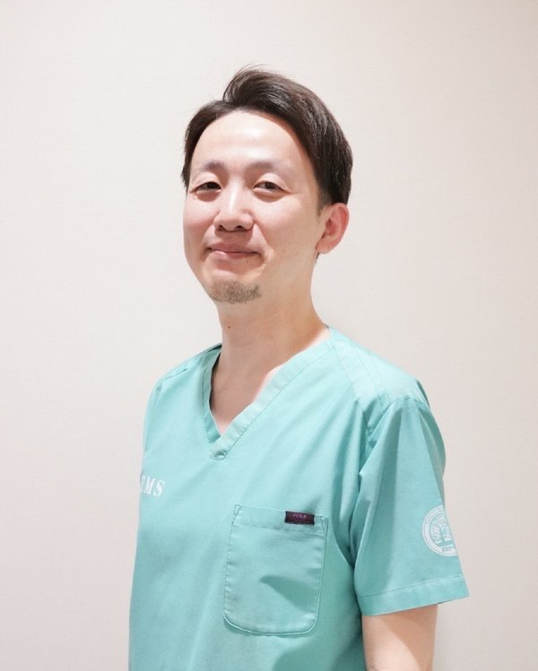

SANGMEDICA
SANGMEDICA
喜多 真也
代表取締役 / 医師
岡山大学医学部医学科を卒業後、救急総合診療科での後期研修を経て、消化器内科医として臨床経験を積みました。 総合内科・救急・消化器領域を中心とした診療の中で、「本当に現場で使える知識や仕組みが不足している」 という課題感を持つようになりました。臨床研修指導医として若手医師の教育に携わる一方、産業医として 企業や自治体の健康管理にも従事し、医療と組織の両方の視点から課題を捉える中で、SANGMEDICA株式会社を設立しました。
現場を離れない臨床家として、そして産業保健を支える産業医として、理論だけでなく実践に根ざした 医療教育・医療コンサルティングを提供することを大切にしています。
学歴
- 2010年3月岡山大学医学部医学科 卒業
職歴
- 2010年4月医療法人徳洲会 宇治徳洲会病院 初期臨床研修 開始
- 2012年3月同院 初期臨床研修 修了
- 2012年4月同院 救急総合診療科 後期研修 開始
- 2015年3月同院 救急総合診療科 後期研修 修了
- 2015年4月一般社団法人平成紫川会 小倉記念病院 消化器内科 入職（消化器内科医員）
- 2019年3月同院 消化器内科 退職
- 2019年4月紫苑会藤井病院（名称変更後 福山南病院）入職（総合内科・救急科・消化器内科、消化器内科部長）
- 2025年1月SANGMEDICA株式会社 設立
- 2025年3月紫苑会福山南病院 退職
- 2025年4月広域医療法人EMS事務局 入職（松岡救急クリニック・松岡救急クリニック分院・西海救急クリニック・植田救急クリニックにて勤務）
- 2026年6月広域医療法人EMS事務局 退職
- 2026年8月T・Matsuoka Medical Center 入職
産業医としての実績
- 笠岡市役所・笠岡市民病院 嘱託産業医
専門医資格
- 総合内科専門医
- 救急科専門医
- 消化器病専門医
- 消化器内視鏡専門医
- 臨床研修指導医
- 日本医師会認定産業医
医療教育・医療コンサルティングに関するご相談は、SANGMEDICA株式会社までお気軽にお問い合わせください。
お問い合わせはこちら